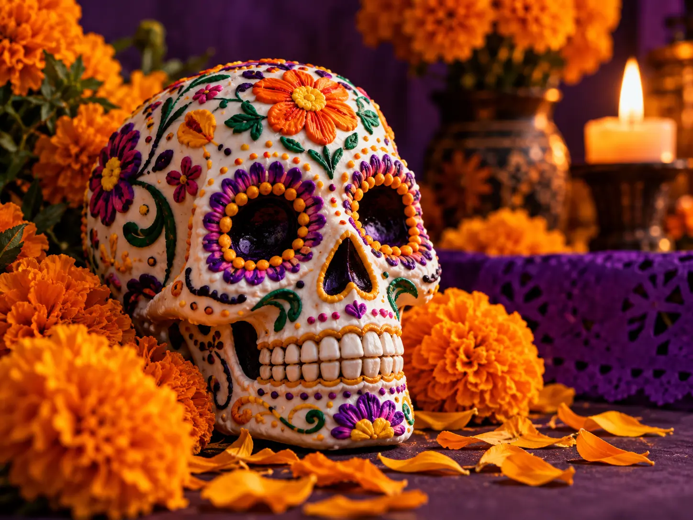
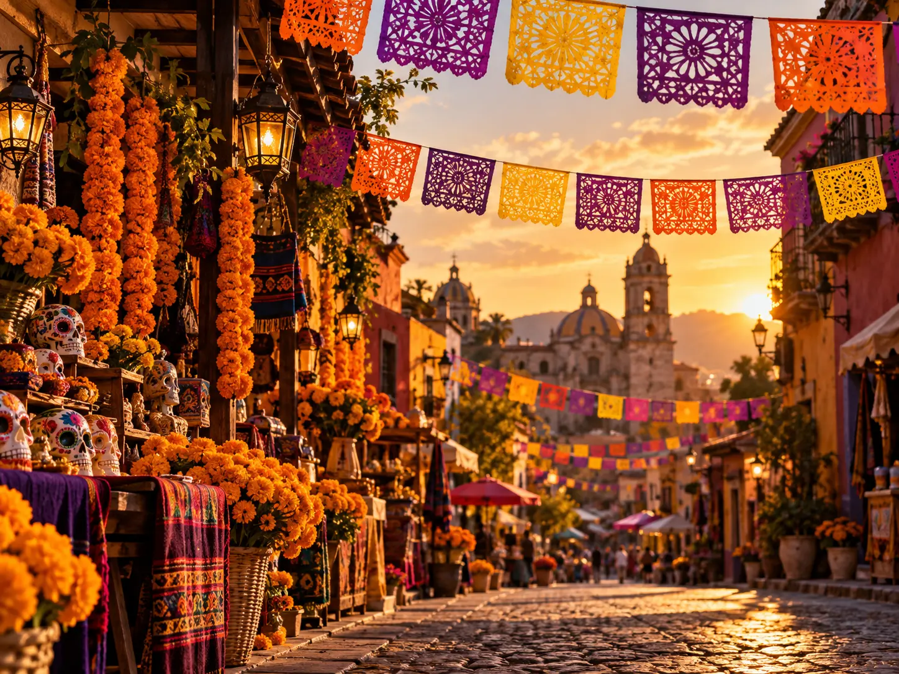
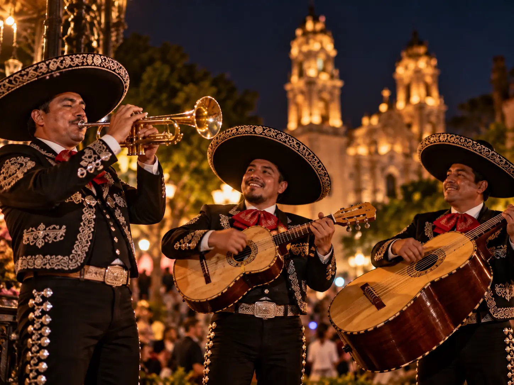
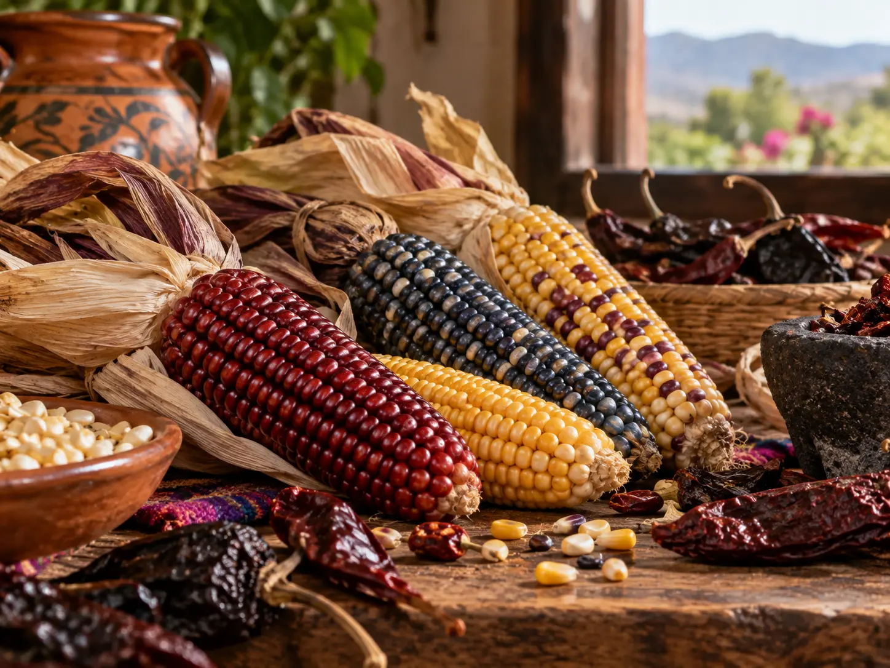

Dia de Muertos
Una celebracion llena de memoria, color y simbolos que honran a quienes ya no estan.
Leer mas[ Archivo cultural / 001 ]
Un recorrido por las historias, los sonidos y los sabores que mantienen viva la identidad de un pais diverso.
Explorar Tradiciones
03 historias para comenzar

Una celebracion llena de memoria, color y simbolos que honran a quienes ya no estan.
Leer mas
El sonido de Mexico: tradicion, emocion y encuentros que se cuentan cantando.
Leer mas
Sabores regionales, recetas heredadas y una mesa que reune a toda la comunidad.
Leer mas